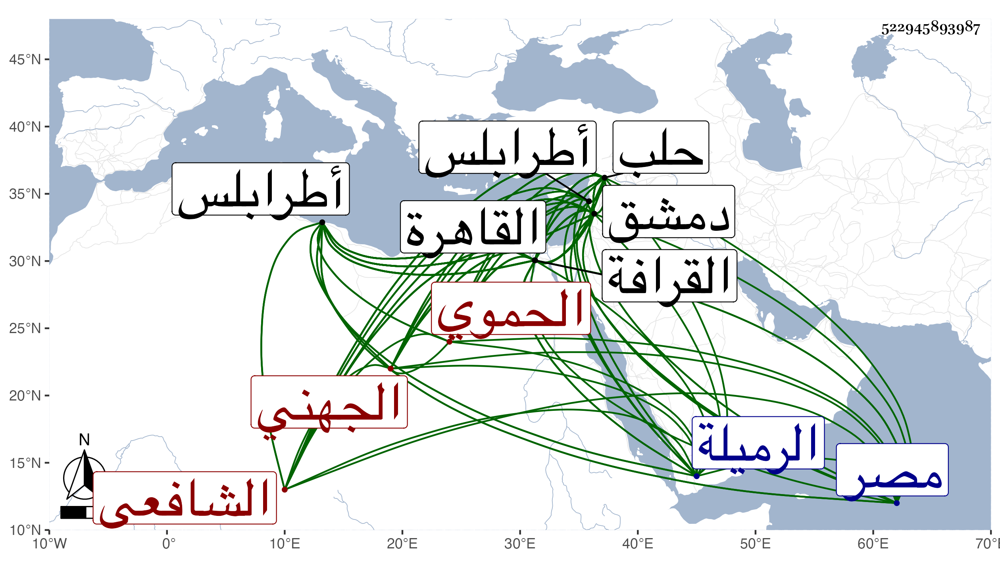

0902Sakhawi.DawLamic.ITO20230111-ara1.EIS1600.522945893987
Biography ID: 522945893987
350
محمد بن محمد بن عثمان بن محمد بن عبد الرحيم بن إبراهيم بن المسلم بن هبة الله ناصر الدين أبو عبد الله بن الكمال بن الفخر بن الكمال الجهني الحموي الشافعي والد الكمال محمد والشهاب أحمد ويعرف كسلفه بابن البارزي . ولد في يوم الإثنين رابع شوال سنة تسع وستين وسبعمائة ومات أبوه وهو ابن سبع فنشأ في كنف أخواله وحفظ القرآن والحاوي وغيره واشتغل ببلده حتى تميز في فنون وتصرف في الأدب والإنشاء وولي قضاءها في سنة ست وتسعين ثم كتابة سرها وناكده نائبها يشبك من ازدمر وأخذ منه مالا فراسله المؤيد شيخ وهو حينئذ نائب طرابلس يشفع فيه فأطلقه فتوجه إليه بطرابلس فأقام معه ومال إليه حتى صار من خواصه وباشر نظر جيش حلب مدة يسيرة في سنة تسع وثمانمائة ثم عاد إلى بلده فلما ارتقى المؤيد لنيابة دمشق ولاه خطابتها وبالغ في إكرامه واستمر معه ثم ولي قضاء الشافعية بحلب عن الناصر فرج فباشره مدة ثم اعتقل بقلعة دمشق إلى أن قدمها الناصر لقتال شيخ ونوروز فأطلقه فلما كانت وقعة اللجون بين شيخ والناصر خرج إلى شيخ فأكرمه وتوجه معه إلى القاهرة فراعى له سالف خدمته ومخاطرته معه بنفسه في عدة مرار وكتب له التوقيع قبل سلطنته ثم بعدها بثلاثة أشهر ولاه كتابة سر الديار المصرية عوضا عن فتح الله في شوال سنة خمس عشرة وبالغ في إكرامه والاختصاص به بحيث لم يكن يخرج عن رأيه في غالب الأمور ولا يفارقه بل يأمره بالمبيت عنده في كثير من الليالي وصار مدار الدولة المؤيدية عليه وحصل أموالا جمة وأخمد ذكر كثير ممن كان يناوئه ونال من الحرمة والوجاهة ما لم ينله غيره من أبناء جنسه واستقر به خطيب جامعه وخازن كتبه وكان بيته متنزها له ، وسار على طريقة الملوك في مماليكه وحشمه إلى أن مرض في أوائل رمضان ولزم الفراش مدة ، ثم مات بعلة الصرع في يوم الأربعاء ثامن شوال سنة ثلاث وعشرين ودفن بجوار الإمام الشافعي تحت شباكه من القرافة على ولده الشهاب أحمد ومشى الناس في جنازته من منزله بالخراطين إلى الرميلة ولم يصل عليه السلطان لأنه كان حينئذ في غاية الضعف بل حضر جنازته كل من بالقاهرة من القضاة والعلماء والمشايخ والأمراء والخليفة وتقدمهم الشافعي ، وظهرت له أموال عظيمة احتاط السلطان على معظمها . ذكره شيخنا في معجمه وقال أنه باشر بوجه طلق وجاه مبذول إلا أنه في أواخر أمره أفحش في الارتشاء على الوظائف وكان شديد العصبية لأصحابه والأذية لأعدائه كما قيل :
| فتى كان فيه ما يسر صديقه | على أن فيه ما يسوء الأعاديا |
قال وكان يتوقد ذكاء مع بعد عهده بالاشتغال والمطالعة يستحضر كثيرا من محفوظاته الفقهية والأدبية وغيرها وينشد القصيدة الطويلة التي حفظها من عشر سنين ولا يتلعثم حفظه أنشدني لنفسه :
| طاب افتضاحي في هواه محاربا | فلهوت عن علمي وعن آدابي |
| وبذكره عند الصلاة وباسمه | أشدو فواطرباه في المحراب |
وقوله لما اعتقل ببرج الخيالة بدمشق :
| مذ ببرج الخيالة اعتقلوني | صحت والنفس بالجوى سياله |
| يال قومي ويال أنصاري الغ | ر ويال الرجال للخياله |
قال وأنشدني لنفسه كثيرا ولغيره ولم أر من أبناء جنسه من يجري مجراه ، وقال في إنبائه أنه استمر يكرر على الحاوي ويستحضر منه وتعاني الآداب وقال الشعر وكتب الخط الجيد وكان لطيف المنادمة كثير الرياسة ذا طلاقة وبشر وإحسان للعلماء والفضلاء على طريقة قدماء الكرماء ، وقال غيره : كان إماما عالما بارعا ناظما ناثرا مفوها فصيحا مقداما طلقا خطيبا بليغا ذا معرفة تامة ورأي وتدبير وسياسة وعقل ودهاء وقال ابن خطيب الناصرية في تاريخ حلب : كان رئيسا كبيرا ذا مروءة وعصبية له نظم رائق ونثر فائق وهو ممن قرض لابن ناهض سيرة المؤيد له ، ومن نظمه ملغزا في رمان وقد أهداه للصدر الأدمي :
| أمولاي ما اسم إن حذفت أخيره | بقلب أطعناه وبان لك البشر |
| ومصدره أن مبتداه حذفته | حرام وفي معكوس ذا رفع الحجر |
| ومن طرفيه أن حلا ورده حلا | على أن فيه السمهري له وفر |
| وها هو فاقصد مثل نصف حروفه | وباقيه إن طاب التفكر يا حبر |
| ويشبهه مستحسن وهو بارز | ولا سيما إن كان يبرزه الصدر |
| فلا زلت خمولا على هامة العلى | وضدك موضوعا ويصحبه الخسر |
وقد بالغ العيني في الحط عليه في غير موضع من تاريخه وكذا في ترجمته وقال المقريزي في عقوده إنه كان شديدا على أعدائه مبالغا في نفع أصحابه وأصدقائه يتوقد ذكاء ويستحضر محفوظاته الفقهية والأدبية مع بعد عهده عن الاشتغال بالعلم واستغراق زمنه في الخدمة السلطانية نهارا ومنادمته ليلا ولطف معاشرته وحسن مذاكرته وغزارة مروءته صحبته سنين ونالني منه نفع وخير كثير ، وأنشد من نظمه أشياء وقال إن المؤيد أخذ من تركته قريبا من مائة ألف دينار وولى ابنه كمال الدين .
